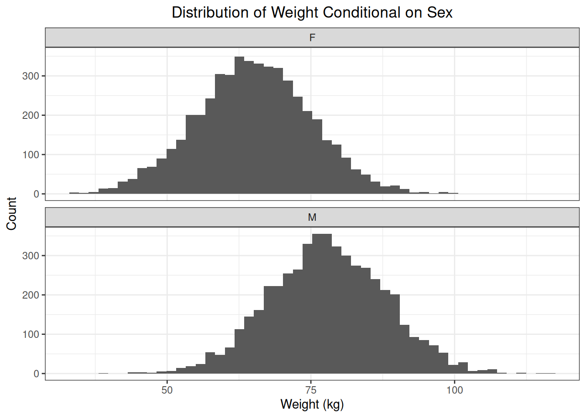

4 Distributions
This chapter focuses on distributions, how they are defined, and how they can be summarized.
4.1 Introduction
A distribution shows how the distinct values in a dataset are distributed across the observations in a dataset. We make a distinction between empirical distributions and theoretical distributions. An empirical distribution is based on observed data, while a theoretical distribution is based on theory (i.e., a probability mass function or a probability density function).
We use the heart dataset to illustrate how an empirical distribution is constructed.
# Read the heart dataset
heart <- readr::read_csv(
file = fs::path(fs::path_wd(), "data", "heart.xls"),
show_col_types = FALSE
)
heart$Sex <- factor(heart$Sex)This dataset contains the variable \(Sex\) denoting the sex of the patient. There are two distinct observed values for this variable: \(M\) and \(F\). If we count the number of observations per distinct observed value of \(Sex\), then we obtain an empirical distribution. The dataset contains 193 observations with the value \(F\) for the variable \(Sex\) and 725 observations with the value \(M\) for the variable \(Sex\).
##
## F M
## 193 725This empirical distribution can be visualized using a barchart:
